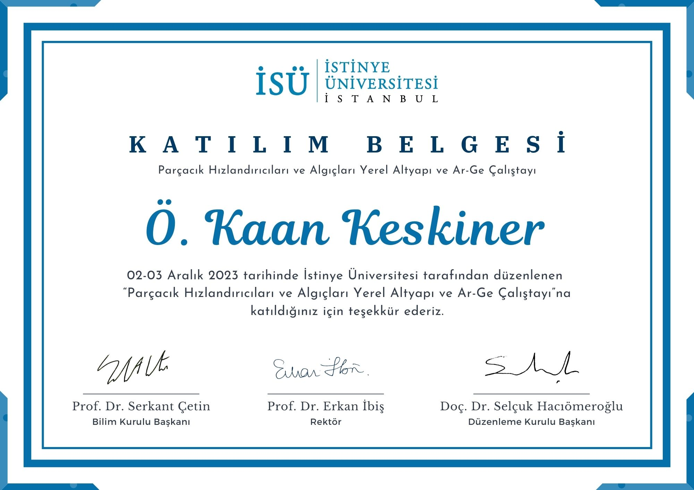
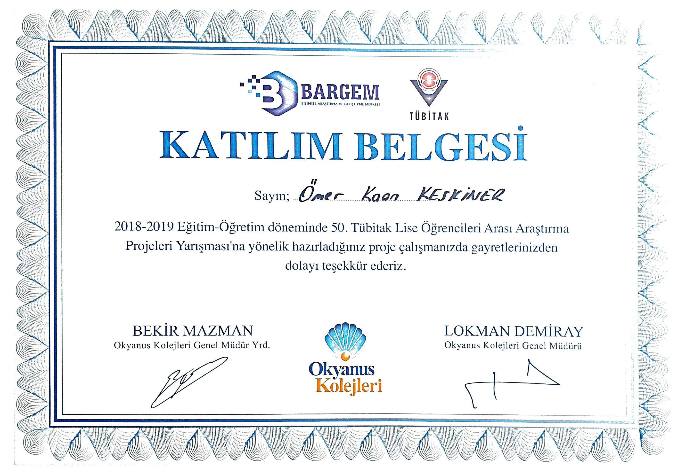
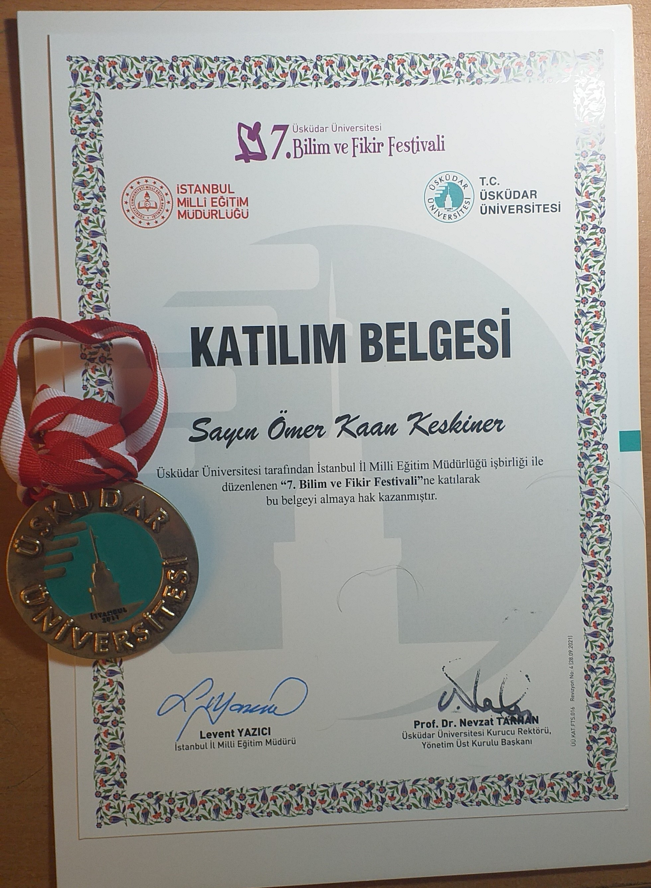
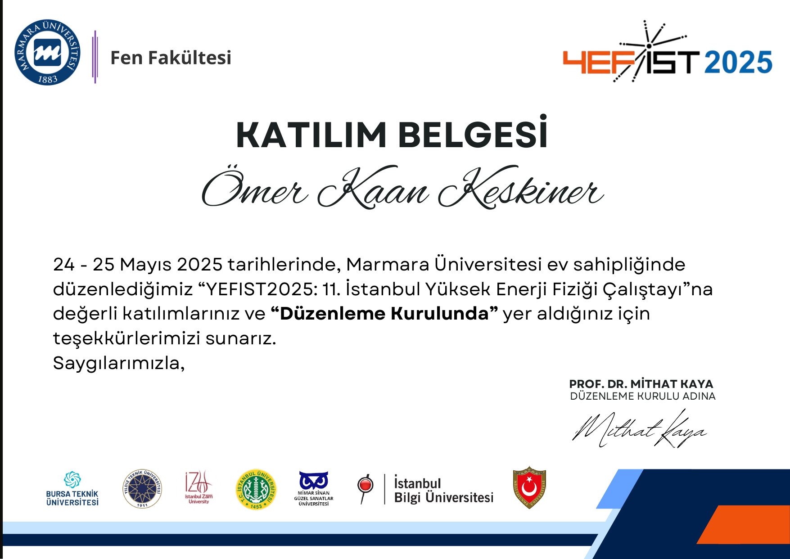
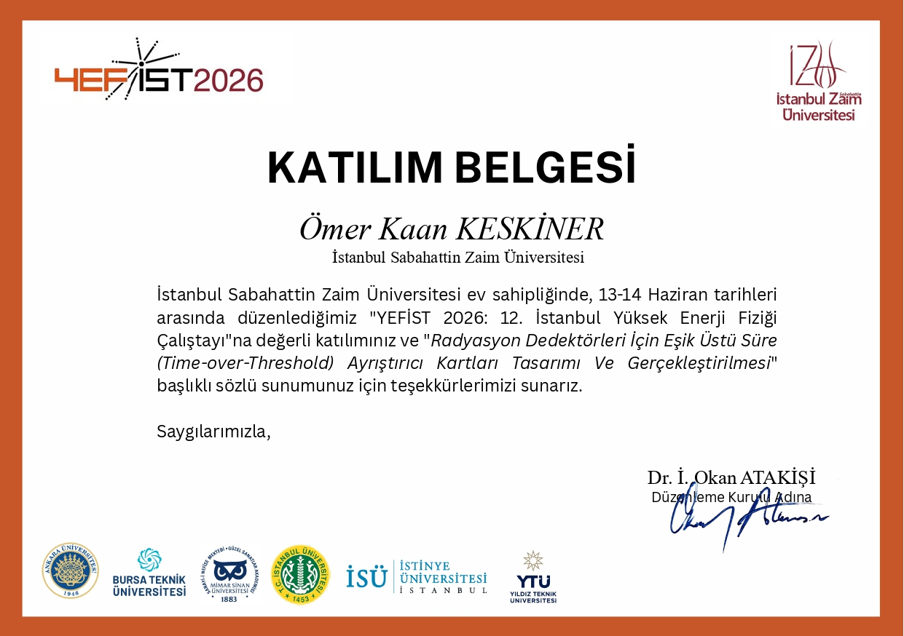

SKILLS
- Electronics: KiCad schematic & PCB design, detector electronics, analog/digital circuit design, soldering
- Instrumentation: LVDS window-comparator & Time-over-Threshold discriminator design for radiation detectors
- Programming: C, C++, MATLAB, LaTeX, Linux
- Scientific Tools: ROOT, Geant4, Qiskit fundamentals
- Prototyping: Robotics, 3D printing, electronics integration
- Languages: Turkish (native), English (full professional), German (limited working)
EMPLOYMENT HISTORY
Guest Researcher Jul 2026-Present
İZÜ NAR - Nuclear Detectors and Robotics Research Center, Küçükçekmece, Istanbul
Conducting M.Sc. thesis research while contributing to nuclear and particle-physics projects.
Part-Time Student Researcher Feb 2024-Jul 2026
İZÜ NAR, Istanbul
Worked at the intersection of nuclear electronics, particle physics, and robotics. Designed KiCad schematics and PCBs, fabricated boards, and used MATLAB simulations to turn concepts into prototypes.
Volunteer Intern Jul 2023-Feb 2024
İZÜ NAR, Istanbul
Studied Linux, robotics fundamentals, advanced physics, CERN's ROOT data-analysis framework, and the Geant4 particle-physics simulation toolkit.
Engineering Intern Jul-Aug 2025
GENSA Mühendislik Jeneratör San. Tic. Ltd. Şti., Başakşehir, Istanbul
Worked with stationary and mobile diesel generator systems from 3 kVA to 2000 kVA.
Engineering Intern Jul-Aug 2024
Servo Kontrol Elektrikli Kontrol ve Tahrik Sistemleri, Otomasyon Ltd., Istanbul
Gained hands-on experience with Rexroth synchronous and asynchronous motors.
EDUCATION
M.Sc. in Nuclear Energy Engineering Jul 2026-Jun 2028
Istanbul Technical University, Istanbul
B.Sc. in Electrical and Electronics Engineering Sep 2022-Jul 2026
Istanbul Sabahattin Zaim University, Halkalı, Istanbul
Attended seminars on physics, technology, and AI; served on the RAS Committee of the IZU IEEE Student Branch.
High School Diploma Sep 2018-Jun 2022
Halkalı Okyanus College Anatolian High School, Istanbul
EQUIPPED PROJECTS
ToT Discriminator Boards for Radiation Detectors 2025-2026
Graduation/senior project. Designed and fabricated an LVDS-based window-comparator and ToT discriminator PCB at İZÜ NAR.
PlatformBot 2024
Robot capable of random navigation within a defined area, with an IMU-based, three-axis dynamic landing platform.
Absolute C-Nema 2024
Cross-platform cinema-management application built in C++ for Windows and Linux.
My Limitless Holiday 2018-2019
MIT App Inventor application supporting inclusive holidays for people with disabilities.
• YEFİST 2026 - HEP Istanbul Workshop: Local Organizing Committee member & presenter (Jun 13-14, 2026)
• YEFİST 2025 - HEP Istanbul Workshop: Local Organizing Committee member
• YEFİST 2023 - HEP Istanbul Workshop: Participant
• Üsküdar University 7th Science and Ideas Festival Award (2019): Medal & certificate for "My Limitless Holiday"
• RAS Committee member, IZU IEEE Student Branch
• Graduation Thesis Project on radiation-detector electronics






INTERESTS & CONTACT
Hobbies: Video games, music & musical instruments, reading, drawing
Music: King Crimson, TOOL, Dream Theater, The Strokes, Yes, Porcupine Tree, Rush, Bowie
Instruments: Drums, Electric Guitar, Classical Guitar, Bass
Contact:
keskineromerkaan@gmail.com |
GitHub |
LinkedIn |
Website |
Blogger